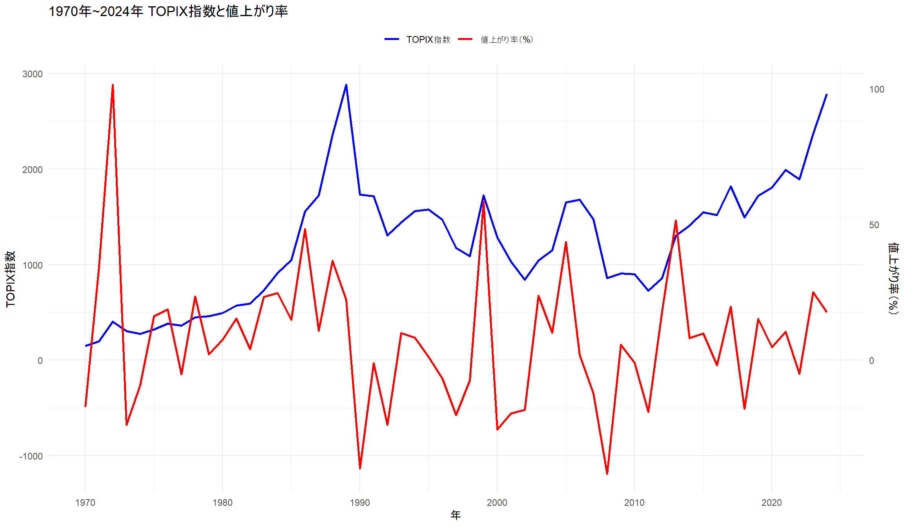

library("tidyverse")── Attaching core tidyverse packages ──────────────────────── tidyverse 2.0.0 ──
✔ dplyr 1.1.4 ✔ readr 2.1.5
✔ forcats 1.0.0 ✔ stringr 1.5.1
✔ ggplot2 3.5.2 ✔ tibble 3.3.0
✔ lubridate 1.9.4 ✔ tidyr 1.3.1
✔ purrr 1.0.4
── Conflicts ────────────────────────────────────────── tidyverse_conflicts() ──
✖ dplyr::filter() masks stats::filter()
✖ dplyr::lag() masks stats::lag()
ℹ Use the conflicted package (<http://conflicted.r-lib.org/>) to force all conflicts to become errorsTOPIX <- read_csv("^tpx_y.csv")Rows: 57 Columns: 6
── Column specification ────────────────────────────────────────────────────────
Delimiter: ","
dbl (5): Open, High, Low, Close, Volume
date (1): Date
ℹ Use `spec()` to retrieve the full column specification for this data.
ℹ Specify the column types or set `show_col_types = FALSE` to quiet this message.## TOPIXの算出が始まり、切りのいい1970年から算出
# 年初始値と年末終値をベクトルにまとめるx
TOPIX_OPEN <- TOPIX$Close[1:55]
TOPIX_CLOSE <- TOPIX$Close[2:56]
# 年次リターン（価格収益率）を計算
topix_return <- (TOPIX_CLOSE - TOPIX_OPEN) / TOPIX_OPEN
# 年度
years <- 1970:2024
# データフレーム化して見やすく表示
topix_df <- data.frame(
Year = years,
Open = TOPIX_OPEN,
Close = TOPIX_CLOSE,
Return = round(topix_return * 100, 2) # パーセント表示
)
# 期待収益率（年平均リターン）
expected_return <- mean(topix_return)
# 結果の表示
print(topix_df) Year Open Close Return
1 1970 179.30 148.35 -17.26
2 1971 148.35 199.45 34.45
3 1972 199.45 401.70 101.40
4 1973 401.70 306.44 -23.71
5 1974 306.44 278.34 -9.17
6 1975 278.34 323.43 16.20
7 1976 323.43 383.88 18.69
8 1977 383.88 364.08 -5.16
9 1978 364.08 449.55 23.48
10 1979 449.55 459.61 2.24
11 1980 459.61 494.10 7.50
12 1981 494.10 570.31 15.42
13 1982 570.31 593.72 4.10
14 1983 593.72 731.82 23.26
15 1984 731.82 913.37 24.81
16 1985 913.37 1049.40 14.89
17 1986 1049.40 1556.37 48.31
18 1987 1556.37 1725.83 10.89
19 1988 1725.83 2357.03 36.57
20 1989 2357.03 2881.37 22.25
21 1990 2881.37 1733.83 -39.83
22 1991 1733.83 1714.68 -1.10
23 1992 1714.68 1307.66 -23.74
24 1993 1307.66 1439.31 10.07
25 1994 1439.31 1559.09 8.32
26 1995 1559.09 1577.70 1.19
27 1996 1577.70 1470.94 -6.77
28 1997 1470.94 1175.03 -20.12
29 1998 1175.03 1086.99 -7.49
30 1999 1086.99 1722.20 58.44
31 2000 1722.20 1283.67 -25.46
32 2001 1283.67 1032.14 -19.59
33 2002 1032.14 843.29 -18.30
34 2003 843.29 1043.69 23.76
35 2004 1043.69 1149.63 10.15
36 2005 1149.63 1649.76 43.50
37 2006 1649.76 1681.07 1.90
38 2007 1681.07 1475.68 -12.22
39 2008 1475.68 859.24 -41.77
40 2009 859.24 907.59 5.63
41 2010 907.59 898.80 -0.97
42 2011 898.80 728.61 -18.94
43 2012 728.61 859.80 18.01
44 2013 859.80 1302.29 51.46
45 2014 1302.29 1407.51 8.08
46 2015 1407.51 1547.30 9.93
47 2016 1547.30 1518.61 -1.85
48 2017 1518.61 1817.56 19.69
49 2018 1817.56 1494.09 -17.80
50 2019 1494.09 1721.36 15.21
51 2020 1721.36 1804.68 4.84
52 2021 1804.68 1992.33 10.40
53 2022 1992.33 1891.71 -5.05
54 2023 1891.71 2366.39 25.09
55 2024 2366.39 2784.92 17.69cat("期待収益率（1970～2024年の平均）:", round(expected_return * 100, 3), "%\n")期待収益率（1970～2024年の平均）: 7.846 %# coefを計算（Returnの最大値に合わせる）
coef <- max(topix_df$Close) / max(topix_df$Return)
# pivot_longerで長い形式に
TOPIX_df_long <- pivot_longer(topix_df, cols = c("Close", "Return"),
names_to = "項目", values_to = "値")
ggplot(TOPIX_df_long, aes(x = Year, y = ifelse(項目 == "Return", 値 * coef, 値), color = 項目)) +
geom_line(size = 1) +
scale_y_continuous(
name = "TOPIX指数",
sec.axis = sec_axis(~ . / coef, name = "値上がり率（%）")
) +
scale_color_manual(values = c("Close" = "blue", "Return" = "red"),
labels = c("TOPIX指数", "値上がり率（%）")) +
labs(
title = "1970年~2024年 TOPIX指数と値上がり率",
x = "年",
color = ""
) +
theme_minimal() +
theme(legend.position = "top")Warning: Using `size` aesthetic for lines was deprecated in ggplot2 3.4.0.
ℹ Please use `linewidth` instead.